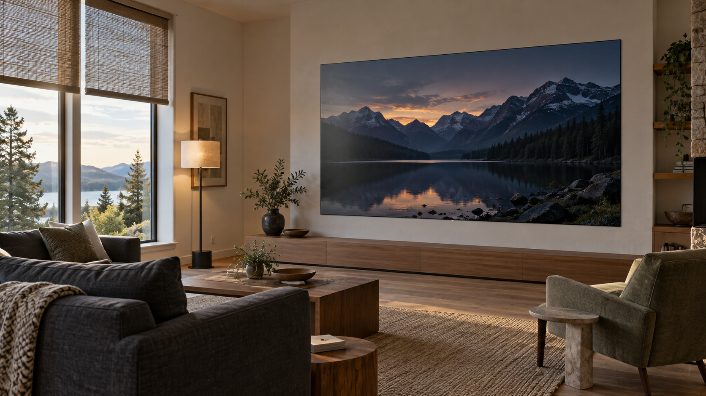
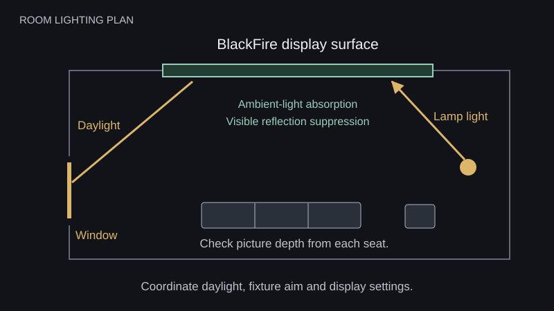

A living room can have a beautiful view and a commanding picture. BlackFire is our light-absorbing display surface, engineered to strongly suppress visible reflections and preserve image contrast in ambient light. Managing MicroLED glare in bright rooms starts with that surface performance, then brings the windows, lighting and display settings together around the way you watch.
Daylight still influences the picture. Strong light can lift the apparent black level and reduce the separation between dark tones, even with recognizable room reflections heavily suppressed. A thoughtful room plan helps BlackFire deliver its full benefit from afternoon sports through an evening film.
How BlackFire handles ambient light
BlackFire absorbs ambient light at the display surface and strongly suppresses the mirror-like images of windows, lamps and furnishings that can compete with content on a glossy screen. That light-eating behavior helps preserve deep blacks and the sense of depth that makes a large image compelling.
For a living-room display, the benefit carries through everything you watch. Dark film scenes depend on subtle differences between shadow tones. Sports need clear, lively pictures during the day. Artwork benefits from a surface that keeps attention on the image. BlackFire gives these uses a strong foundation in rooms with natural and artificial light.
Read more about BlackFire and its place in our display technology. Your authorized dealer can demonstrate it with familiar content and the kind of lighting you plan to use at home.
Understand reflection and contrast washout
A mirror-like reflection contains a recognizable shape: a window frame, a lamp or a person. Contrast washout appears as a lighter black level or a pale veil across darker content. These are different ways room light can affect a screen, and a display can show a loss of contrast even while sharp reflections remain strongly suppressed.
BlackFire tackles incoming room light through absorption and reflection control. Very strong illumination can still make dark tones look lighter, reducing the picture's depth. The useful planning question is how much light reaches the display and how well the image holds its shadow detail in those conditions.
Surface treatment is an important part of LED display design. Planar's optical-treatment guide discusses distinct glossy and matte finishes and their behavior around windows and other light sources. Our bright-room planning starts with BlackFire's light-absorbing surface and considers the room around it.
Plan the light reaching the screen
Mark the windows, glazed doors and fixtures that illuminate the display wall. Include adjoining spaces, especially a kitchen behind the seating. The plan below shows incoming room light reaching the BlackFire surface. It gives the design team a clear place to begin a daylight and lighting review.

Start with the view you want to keep. Partial shades can temper strong daylight while leaving the room open to the outdoors. Fixtures can light artwork, seating and circulation areas with their beams directed away from the display. Review direct sun exposure against the proposed display's installation requirements as the room plan develops.
The guide to MicroLED in sun-filled living rooms covers the broader architectural setting. Here, the aim is to identify the windows and lighting scenes that affect picture contrast during your normal viewing hours.
Set brightness around the finished room
BlackFire's surface performance and display brightness work together. Light absorption helps protect dark areas of the picture; image output gives bright scenes and highlights their presence. Strong room light can still reduce the distinction between shadow tones, so the final setting should be judged with real content.
Begin with the intended shades and lights in position. Watch a dark film scene, a daytime sports broadcast and a familiar image with fine shadow detail. Your dealer can then establish day and evening modes that suit the room. Our MicroLED brightness guide explains the role of nits and operating settings in more detail.
Check daytime and evening picture depth
Use the same short content sequence in each condition. Record the seat, shade position, lighting scene and display preset so the result can be repeated.
| Viewing condition | What to inspect | What the team can adjust | What to confirm |
|---|---|---|---|
| Daytime with the view open | Check black levels and the separation between dark tones. | Test partial shades and the daytime display preset. | Confirm that the picture has depth with the amount of daylight you want. |
| Late afternoon | Check whether changing sun angles lighten part of the picture. | Review shade coverage and timing with the design team. | Confirm consistent viewing through the hours you use the room. |
| Evening with lamps on | Switch lamps and adjoining-room lights on individually while watching a dark scene. | Adjust fixture aim, shielding and dimming. | Confirm clear shadow detail with comfortable room lighting. |
| Film viewing | Inspect fine shadow detail and bright highlights with the planned room scene active. | Recall the calibrated cinema preset with its matching lights and shades. | Confirm that the owner can reproduce the complete setting with a simple control. |
What the integrator is actually deciding
The dealer brings the display, room plan and viewing tests together. A practical design review should produce these decisions:
- Identify the seats and viewing times the system must serve.
- Confirm the display location with the architect and interior designer.
- Identify the windows and fixtures that need treatment or adjustment.
- Demonstrate BlackFire and picture contrast under representative room light.
- Save day and evening settings for the display, lights and shades.
- Record the tested settings and show the owner how to recall them.
Our guide to room-control scenes explains how these settings can work together. Final checks should take place with the actual furnishings and fixtures so the saved scenes reflect the room you will use.
See BlackFire in your viewing conditions
Send an authorized Opal dealer a room plan, photographs from the main seats and the times you expect to watch. Include the windows you want to keep open to the view. A demonstration built around those details shows how BlackFire, the display settings and the lighting plan can support the picture you want at home.
Plan your bright-room display
Connect with an authorized Opal dealer to coordinate BlackFire, room lighting and the viewing conditions you want at home.
Find a Dealer